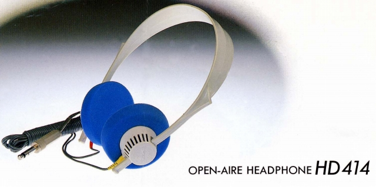
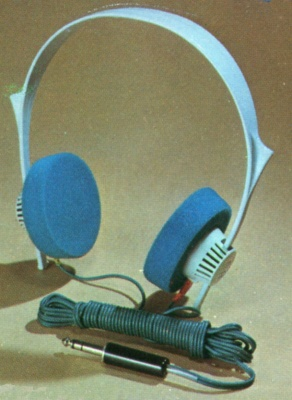
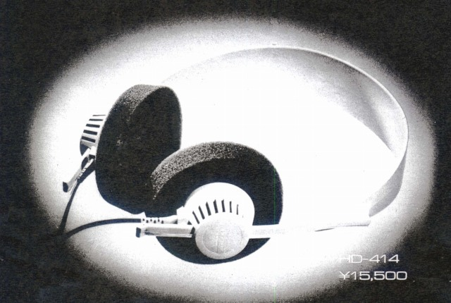
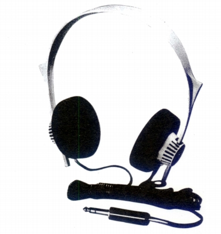
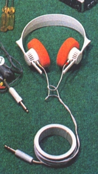
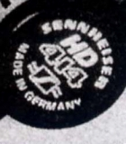
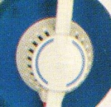
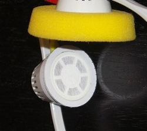
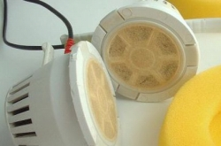

HD-414




■価格 9,800円
■型式 ダイナミック型オープンエアタイプ
■振動板 36�o
■インピーダンス 2ｋΩ
■再生周波数帯域 20-20,000Hz
■許容入力 0.1W
■感度
■コード 3m
■重量 130g（コード含まず）
■発売 1971〜73年?
■販売終了 1975年頃
■備考
当時の交換用パッドは複数のカラーあり（黄色・グレー・緑・青・赤）
価格は1973年頃のもの 1974年頃は12,600円、1975年以降は15,500円
なお、発売時期はStereo
Sound YEAR BOOK 1970及び1973から記載
1970年に国内発売されたとの記述あり。 （→当時の広告）

（赤イヤパッドの個体）
オークションなどではオリジナル版のHD-414とされる機体が結構出品されるが、
1995年以降の復刻版HD-414Classicとデザインが変わったHD-414SL以外は
オリジナル版とほぼ同じデザインであり、大半はHD-414(NEWTIPE)
かHD-414Xである。
黒いカプセルに金色で、モデル名や「MADE IN
GERMANY」と記入されているのが
HD-414(NEWTIPE)であるが、重量に大きな差があり（オリジナル 130g、NEWTIPE
74g)、
ここまで違えば、音質に影響がでないはずがない。

白いヘッドバンドのものは、ことさら「オリジナル」と強調されることが多いが、大半は
HD-414Xである。HD-414Xにはハイインピーダンス（2KΩ）と、ローインピーダンス（32Ω）
のバージョンがあるが、ローインピーダンスバージョンの明確な識別ポイントは、カプセル
に入ったブルーの半円状のラインである。

HD-414Xのハイインピーダンス・バージョンとオリジナルの外観上の識別ポイントは
ヘッドバンドのクリック・ストップのミゾである。


左が「オリジナル」で、右が「414X」。オリジナルのヘッドバンドの内側には位置決めのためのミゾが無い。
ミゾの追加は当時の広告に明記された「X」シリーズの改良点である。
またその広告にはオリジナルと2kHZ付近のピークを若干小さくしたとも書かれている。
（「オリジナル」のヘッドバンドの画像は「まみそぶろぐ」様の画像を使用させていただいております。）